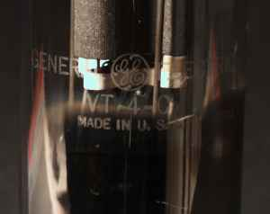

真空管アンプの何が，これ程までに人々をひきつけるのでしょう？ 多くの人は「音が良い」といいます．私もそう思います．人間は機械ではありませんから，特性値のみが良くても，それで「音が良い」とは感じないのでしょう．むしろ，ある種の歪みが乗ったほうが快く感じるように人間の耳は出来ているのかもしれません．そしてなんといっても外観の良さがあるでしょう．独特の形を持ったガラスに封じ込められた電極．そしてその中でヒーターが煌々と光る様は独特の雰囲気を醸し出します．そして最後に，作る楽しみがあります．半導体アンプは今ではメーカーの技術がアマチュアを遥かに上回ってしまい，わざわざ自分で作っても，ありがたみが薄れてしまいました．こんなところが真空管アンプを愛する理由でしょうか．
 私が，初めて真空管でアンプを作ったのは中学生の頃だったと思います．EL-34 のシングルアンプでした．回路は，本に載っていたものをそのままコピーして作りました．このアンプは幾つか部品を交換したものの(実装が悪くて，ケミコンとカソード抵抗を近づけ過ぎたため，ケミコンがいかれてしまった)，今でも家で活躍しています．かれこれ 20 年近く故障らしい故障をしていません．真空管自体は確かに半導体よりも寿命が短いのですが，何しろ部品点数がずっと少ないので，結局アンプ全体の故障率は下手な半導体アンプよりは上なのでしょう．
私が，初めて真空管でアンプを作ったのは中学生の頃だったと思います．EL-34 のシングルアンプでした．回路は，本に載っていたものをそのままコピーして作りました．このアンプは幾つか部品を交換したものの(実装が悪くて，ケミコンとカソード抵抗を近づけ過ぎたため，ケミコンがいかれてしまった)，今でも家で活躍しています．かれこれ 20 年近く故障らしい故障をしていません．真空管自体は確かに半導体よりも寿命が短いのですが，何しろ部品点数がずっと少ないので，結局アンプ全体の故障率は下手な半導体アンプよりは上なのでしょう．このアンプを使いながらも，いつかは，三極管のアンプを作ってみたいという夢がずっとありました．そんな中で UV-211(VT-4-C)を買ったのは高校生の頃だったと思います．この球は巨大で EL-34 に比べても 2 倍近い大きさがあります．この球は真空管アンプの本を見ると大抵載っていて，シングルで A 級 20W，プッシュプルにすれば，200W 以上が取り出せ，また直線性も良いという破格の特性，トリウムタングステンの眩しいくらいのフィラメントの輝き等，まさに究極の三極管の一つであると言えるでしょう．もちろん，三極管の雄といえば，WE の 300B があまりに有名ですが，それとはまた別路線での頂点に立つのが，この 211 と 845 と言えるのではないでしょうか．ただし製作記事の数としては，かなり少ないようです．それはこの球の能力を引き出そうとすると，どうしても電源に 1kV を超える電圧が要求されるため，製作にかなりの危険が伴うためでしょう．
 私が買った当時，GE の 211 は，一本 8,000 円で買えました．取り扱いに危険があることもあり，当時から敬遠されていたので，300B や 2A3 と比べると，かなり安く買えたようです．ただし今は，倍以上の値段が付いているようです．最近は中国製の真空管が出回っていて，これが安く買えるようです．中国製は当初は粗悪品のレッテルを貼られていましたが，最近は割と評判が良いようです．
当時，球は買ったものの，学生の身分では他の部品を揃えるには至らず，そのまま 10 年以上棚の飾りとなっていました．しばらくはコンピュータの方が面白くて，日の目を見る事はありませんでしたが，最近になってコンピュータのアップグレードにも飽きてきて，というか，現状の機械で不満を殆ど感じなくなってしまい，コンピュータにお金をかける動機が無くなってしまいました．そこで，しばらくコンピュータの方は凍結してまた，真空管アンプを作ってみようと思い立ったわけです．UV-211 以外の球でもいいのですが，ずっとお飾りにして放っておいた負い目もあり，この球を使う事になりました．
さて，UV-211 のアンプを作るとして，最も手軽な方法はキットを使用する事です．ラジオデパートの三栄無線では UV-211 のアンプのキットを販売していますので，これを買ってくるのが一つの手です．キットなら重労働なケースの穴あけも不要ですし，お店保証の回路なわけで安心感もあります．しかし，やはり「自作ならではの世界で一台のアンプ」という(自己)満足感のようなものは，全て自作するのに比べればずっと，劣ってしまいます．今回は敢えて，いばらの道を進む事にしました．アンプを設計するためには，使用するパーツのデータが必要ですが，幸いインターネット上を探し回れば，真空管のデータは驚くほど簡単に手に入ります．トランス類に関しては，お店でカタログをもらってきました．これでほぼ設計に必要なものは揃ったわけです．